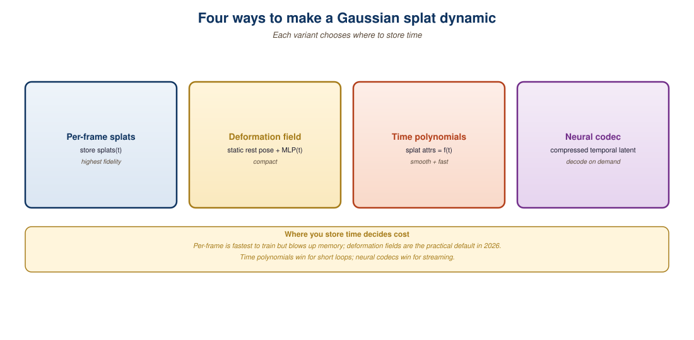

"A 3D Gaussian is a snapshot. A 4D Gaussian is a verb."
Paraphrase from the 4DGS paper review thread, ICLR 2024
Dynamic Gaussian Splatting extends the static representation from Section 23.1 to time-varying scenes, the basic primitive for free-viewpoint video, AR scene capture of moving people, and the volumetric output of world models in Chapter 41. There are two design axes: explicit per-frame Gaussians (a fat representation that simply tracks each Gaussian's pose at every timestep) versus implicit deformation fields (a thin representation that maps a canonical Gaussian to its current state via an MLP or basis function). Each axis comes with trade-offs in memory, generalization, and training stability. By 2026, Spacetime Gaussians, 4D-Rotor, and Deformable 3DGS are the production-ready members of the family.

23.2.1 The Deformation vs Explicit Axis
If a scene has $N$ Gaussians and a clip has $T$ frames, the explicit cost is $O(NT)$ floats: every Gaussian has its own pose at every timestep. A 100k-Gaussian, 300-frame clip is 30 million extra parameters just for positions. That is feasible but ugly. The deformation alternative trains a small MLP $f_\theta(\mu_0, t)$ that maps a canonical pose to the time-$t$ pose. Cost drops to $O(|\theta|)$, but the MLP must learn smooth motion that generalizes across all Gaussians.
The practical hybrid, used by Spacetime Gaussians and 4D-Rotor, is to give each Gaussian a small set of learnable temporal basis coefficients. Motion is the linear combination of a shared basis (Fourier, polynomial, or learned) with per-Gaussian weights. This keeps memory near static-3DGS while supporting complex motion. The math is simple: position at time $t$ is $\mu(t) = \mu_0 + \sum_{k=1}^K w_k\, b_k(t)$ where $b_k$ are the global temporal basis functions and $w_k$ are the per-Gaussian, per-dimension weights.
Once you accept that the rasterizer in Section 23.1 is differentiable, adding time is a matter of routing $t$ to the Gaussian parameters before splatting. Everything else, the alpha compositing, the photometric loss, the densification, transfers unchanged. The hard part is regularizing motion so the optimizer cannot cheat by teleporting Gaussians frame to frame.
23.2.2 4DGS: Fourier Feature Motion (Wu et al., 2024)
4D Gaussian Splatting by Wu et al. (CVPR 2024) was the first widely adopted dynamic variant. It attaches a small HexPlane-style spatial-temporal MLP to each Gaussian that maps canonical position and time to a deformation delta. The architecture borrows from 4D K-Planes and TensoRF: a factorization of a 4D feature volume into axis-aligned planes, which keeps lookups cheap.
The key trick is the use of frequency-encoded time: $t$ is passed through a sinusoidal positional encoding so the MLP can represent rapid motion without the spectral bias of vanilla coordinate networks. Wu et al. report state-of-the-art quality on the Plenoptic Video and D-NeRF datasets at training times of 10 to 30 minutes per clip on a single A100.
# Skeleton of a 4DGS forward pass. The HexPlane is shared
# across all Gaussians; the per-Gaussian state is just
# the canonical mean, scale, rotation, opacity, and SH color.
import torch
import torch.nn as nn
class HexPlane(nn.Module):
def __init__(self, F=32, R=128):
super().__init__()
# 6 planes for the 4 axes (xy, xz, yz, xt, yt, zt)
self.planes = nn.ParameterList([
nn.Parameter(0.01 * torch.randn(1, F, R, R))
for _ in range(6)
])
self.mlp = nn.Sequential(
nn.Linear(3 * F, 64), nn.ReLU(),
nn.Linear(64, 7), # dxyz + dquat
)
def forward(self, xyz, t):
xyzt = torch.cat([xyz, t.expand(xyz.shape[0], 1)], dim=-1)
# Spatial planes (xy, xz, yz) multiplied element-wise
# Temporal planes (xt, yt, zt) added, following K-Planes
feat = trilinear_lookup(self.planes, xyzt)
return self.mlp(feat)
# Per-step: compute deltas, apply to canonical, rasterize.
delta = hexplane(gaussians.means, t)
means_t = gaussians.means + delta[:, :3]
quats_t = slerp(gaussians.quats, delta[:, 3:], t)23.2.3 Dynamic 3D Gaussians: Explicit Tracks (Luiten et al., 2024)
Dynamic 3D Gaussians takes the opposite path. Each Gaussian has its own time series of positions and rotations. To prevent the optimizer from drifting Gaussians arbitrarily, Luiten et al. introduce three regularizers:
- Isotropic local rigidity: each Gaussian's $k$-nearest neighbors should preserve their relative offsets across time, weighted by an isotropic kernel.
- Rotational rigidity: the same neighborhood should rotate together; deviations are penalized via a Frobenius norm on the local rotation discrepancy.
- Long-term local rigidity: the neighborhood at frame $t$ should match the neighborhood at frame \$0$, preventing drift over long clips.
With these in place, the optimizer learns crisp, persistent tracks. Each Gaussian becomes a 3D point that follows a real object through space, which makes Dynamic 3D Gaussians uniquely suited for downstream tasks like 3D point tracking (the OmniMotion successor lineage). Memory is the price: a 100k-Gaussian, 300-frame scene needs roughly 30 million additional floats just for tracks.
If your downstream use case is just rendering, 4DGS-style deformation fields are usually more efficient. But if you want to extract motion (e.g. for character animation, sports analytics, or feeding the splats to a downstream world model in Chapter 41), the explicit tracks are far more usable. Dynamic 3D Gaussians is the lineage that powers Splatfields and the open-source 4D editing tools.
23.2.4 Spacetime Gaussians and 4D-Rotor (2024 to 2025)
Spacetime Gaussians (Li et al., 2024) treats each Gaussian as a function over both space and time. The canonical Gaussian is augmented with a polynomial motion trajectory and a temporal opacity envelope, so each Gaussian is "alive" only for a portion of the clip. This is exactly what you want for transient objects (a thrown ball, a glint of light) that should not exist at all times.
4D-Rotor Gaussian Splatting (Duan et al., 2024) generalizes the rotation from a 3D quaternion to a 4D rotor in geometric algebra. The single rotor parameter captures coupled spatial and temporal rotations, which the authors argue is more expressive for articulated and non-rigid motion. Empirically, 4D-Rotor matches or exceeds 4DGS on Plenoptic Video at lower parameter counts.
| Variant | Year | Memory per 100k Gaussians, 300 frames | PSNR on Plenoptic Video | Best for |
|---|---|---|---|---|
| 4DGS (HexPlane) | 2024 | ~250 MB | 31.0 dB | General free-viewpoint video |
| Deformable 3DGS (MLP) | 2024 | ~150 MB | 30.4 dB | Small motion, synthetic data |
| Dynamic 3D Gaussians | 2024 | ~600 MB | 29.8 dB | Track extraction, editing |
| Spacetime Gaussians | 2024 | ~320 MB | 32.1 dB | Transient objects, sparse motion |
| 4D-Rotor Gaussian Splatting | 2024 | ~270 MB | 32.3 dB | Articulated and rotational motion |
23.2.5 Motion Priors and Temporal Regularization
Dynamic splatting from few views is severely under-constrained: many trajectories can explain the same multi-view video, and the optimizer will gladly produce floaters that flicker only when seen from a held-out angle. Three classes of prior counteract this:
- Geometric priors (depth, normals, optical flow) supervised from off-the-shelf models like Depth Anything V2 or RAFT.
- Rigidity priors like the as-rigid-as-possible (ARAP) energy on neighboring Gaussians.
- Diffusion priors: SDS-style losses from a video diffusion model (see Chapter 33) that penalize unrealistic novel views.
By late 2025, the dominant pattern combines a small explicit motion field (4DGS- or Spacetime-style) with a video-diffusion SDS loss that supervises rendered novel views. This bridges few-view dynamic capture with the generative priors of Section 31.1 and unlocks the image-to-3D pipelines of Section 23.3.
A 2025 deployment by a sports broadcaster used eight 8K cameras around a basketball court to capture player motion as a Spacetime Gaussian scene. The temporal opacity envelope correctly handled transient objects (the ball, sweat droplets, the referee's whistle blast) while the rigidity priors kept players' limbs from melting. Compressed to .ksplat, a 30-second clip shipped in ~80 MB and replayed at 90 fps on a Quest 3 headset. The same pipeline would have required terabytes with traditional volumetric video.
Dynamic 3DGS with 6+ synchronized cameras is mostly solved. With a single moving camera plus a moving subject, you are in the deeply under-constrained regime, and reconstructions tend to be plausible but wrong. Treat single-camera 4D capture as experimental in 2026: pair it with at least an off-the-shelf monocular depth predictor and an HMR-style human pose prior before trusting the output.
23.2.6 Language Conditioning and Editing
The final 2024-to-2025 development is language-grounded 4D editing. Tools like Gaussian Editor and 4D-Editor attach a CLIP or SAM feature to each Gaussian, enabling text-driven selection ("the dog") and edit operations ("recolor blue", "remove from frames 50 to 100"). The pattern is identical to the language-conditioned 3D editing of Section 23.5, just with a temporal axis added to the selection.
Dynamic Gaussian Splatting is the explicit, real-time alternative to dynamic NeRFs. The design space spans deformation-field variants (4DGS, Deformable 3DGS) that are memory-cheap but harder to edit, explicit-track variants (Dynamic 3D Gaussians) that are heavy but support downstream motion tasks, and temporally-augmented Gaussians (Spacetime, 4D-Rotor) that strike a middle ground. The hardest open problem is motion priors from few views; video-diffusion SDS losses from Chapter 33 are the current best answer.
- For a 50-Gaussian-per-square-inch scene over 600 frames, would you prefer 4DGS or Dynamic 3D Gaussians? Why?
- Why does Spacetime Gaussians need a temporal opacity envelope? Why not just rely on the standard opacity parameter?
- Suppose your input is a 4-second clip from a single iPhone. Which priors and which variant would you reach for first?
- The 4D-Rotor representation uses a single rotor instead of separate spatial and temporal rotations. What problem does this address, and what does it cost?
What Comes Next
Section 23.3: Image-to-3D with Stable Zero123 and Multi-View Diffusion moves from reconstruction to generation. Given a single image or text prompt, how do you produce a 3D Gaussian scene? The answer involves multi-view diffusion models and the score-distillation losses that bridge them with 3DGS optimization.